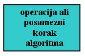
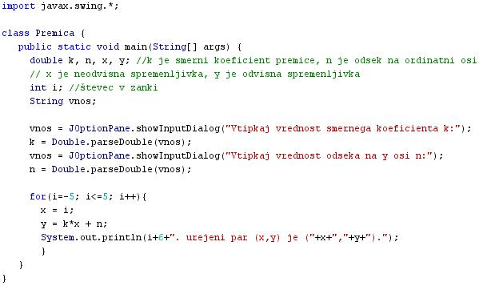

SEKVENCA ALI ZAPOREDJE
- Nizko strukturirani programi so pogosto sestavljeni iz enostavnih struktur nadzora poteka programa.
- Enostavne strukture nadzora poteka programa so sekvenca ali zaporedje, selekcija ali izbira ter iteracija ali ponavljanje.
- Sekvenca ali zaporedje je urejeno izvajanje bloka ukazov v toèno doloèenem vrstnem redu.
- V sekvenci se stavki, ki jih blok ukazov vsebuje, izvršujejo enostavno eden za drugim, tako kot so zapisani v programu.
- V sekvenci ni prisotno nikakršno odloèanje med veè možnostmi.
- V sekvenci tudi ni moè najti ponavljanja izvajanja posameznega ukaza.
- V sekvenci se posamezi ukaz ponovi le v primeru, èe je zapisan v bloku ukazov veè kot enkrat.
- V diagramu poteka je sekvenca predstavljena z enim blokom za operacije zali zaporedjem takih blokov.
- Primer:
- Besedni opis problema in rešitve.
- "Zapiši program, ki bo tabeliral linearno funkcijo z znanim smernim koeficientom k, in znanim odsekom na ordinatni osi n. Funkcija naj bo tabelirana na intervalu x=[-5,5] s korakom 1. Program mora uporabnika najprej pozvati k vnosu smernega koeficienta k in odseka na ordinatni osi n": Vprašamo se, kaj vse bomo morali postoriti za rešitev problema in to opišemo v nekaj stavkih. Potek reševanja problema poskusimo premisliti èim bolj natanèno.
- Pozovi uporabnika k vnosu smernega koeficienta k linearne funkcije.
- Pozovi uporabnika k vnosu odseka na ordinatni osi n linearne funkcije.
- Uporabi zanko s števcem, ki bo tekel od -5 do + 5 s korakom 1. Ob vsakem izvajanju zanke izraèunaj vrednost odvisne spremenljivke ali ordinate y v odvisnosti od vsakokratne vrednosti neodvisne spremenljivke ali abscise x po splošni enaèbi za linearno funkcijo.
- Izraèunaj za vsako vrednost neodvisne spremenljivke x njeno ustrezno vrednost spremenljvke y.
- Izpiši urejene pare spremenljivk x in y - (x,y)
VAJA 48:
- V okolju za pisanje izvorne kode v jeziku Java, za prevajanje in za interaktivno delo zapiši zgornji program "Premica". Pomagaj si s sliko.
- Kodo lahko tudi kopiraš iz te datoteke in jo prilepiš v okolje, v katerem pišeš programèke. Pozor: koda, ki jo boš kopiral/a, vsebuje eno, dve, tri ali štiri napake. Èe želiš, da bo program deloval, moraš napake odkriti in jih odpraviti.
- Izvorno kodo shrani pod imenom "ImePriimek48.java". ImePriimek je seveda tvoje lastno ime in priimek.
- Datoteko "ImePriimek48.java" prevedi.
- Prevedeno datoteko zaženi, preveri rezultat v interaktivnem oknu in poklièi profesorja, da vidi rezultat.
- Rezultate programa prepiši v obliki tabele v zvezek ter nariši v pravokotnem koordinatnem sistemu izraèunano linearno funkcijo. Zraven pripiši ustrezno enaèbo premice.
- Sam/a skonstruiraj diagram poteka v tej uèni enoti in ga nariši v zvezek.
1. Vprašanja:
1. Kaj je sekvenca?
2. Kakšna je slovenska beseda za sekvenco?
3. Èesa v sekvenci ni moè najti?
4. Pod kakšnim pogojem lahko v okviru sekvence govorimo o ponavljanju posameznih ukazov ali blokov ukazov.
5. Kakšni sta tuji besedi za izbiro in za ponavljanje? Pomagaj si z uèno enoto Struktura programa (37).
6. Kaj pomeni izraz "tabeliranje funkcije"?
7. Kaj nam pove smerni koeficient k linearne funkcije? Kako bi lahko poiskal odgovor na to vprašanje s pomoèjo programèka v tej uèni enoti?
8. Kaj nam pove odsek na ordinati n linearne funkcije? Kako bi lahko poiskal odgovor na to vprašanje s pomoèjo programèka v tej uèni enoti?
9. Zapiši splošno enaèbo linearne funkcije.
10. Zapiši enaèbo linearne funkcije, ki jo moraš tabelitati v primeru te uène enote.
2. Zapiši od ene do pet kljuènih besed, ki povzemajo vsebino te uène enote.
3. Povezave do dodatnih informacij.
Spletni priroènik proizvajalca programskega okolja Java. To je podjetje Sun.
|